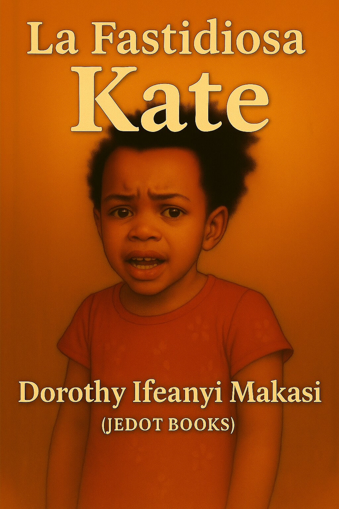
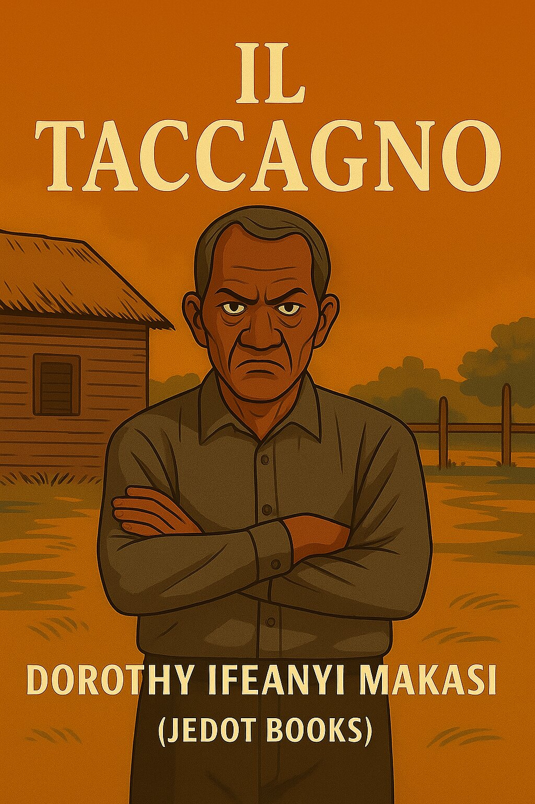
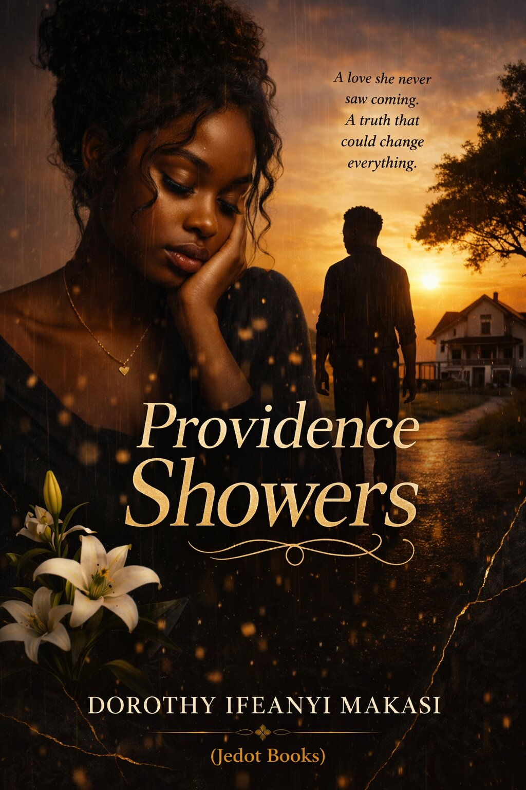

Jedot Books

Bothersome Kate
By Dorothy Ifeanyi Makasi
A humorous and heartwarming story about a bold Nigerian girl who speaks her mind and shakes up every room she walks into.

La Fastidiosa Kate
Di Dorothy Ifeanyi Makasi
Una storia divertente e commovente su una ragazza nigeriana coraggiosa che dice sempre quello che pensa e sconvolge ogni ambiente in cui entra.

The Skinflint
By Dorothy Ifeanyi Makasi
Mr. Odiegwu is a man of ambition, charm, and complexity. In a society riddled with inequality, his survival instincts drive him through morally grey paths. This book explores ambition, choices, and the price of ignoring conscience.

Il Taccagno
Di Dorothy Ifeanyi Makasi
Il signor Odiegwu è un uomo di ambizione, fascino e complessità. In una società piena di disuguaglianze, il suo istinto di sopravvivenza lo spinge a percorrere strade moralmente ambigue. Questo libro esplora l’ambizione, le scelte e il prezzo di ignorare la propria coscienza.

Almost Forever
By Dorothy Ifeanyi Makasi
A moving story of love, time, and the impossible choice between what we want and what we must do. A tale that lingers in the heart — full of emotion and depth.
Quasi per Sempre
Di Dorothy Ifeanyi Makasi
Una storia commovente d’amore, di tempo e della scelta impossibile tra ciò che desideriamo e ciò che dobbiamo fare. Un racconto che rimane nel cuore — pieno di emozione e profondità.

Broken Marriage
By Dorothy Ifeanyi Makasi
Evelyn’s world shatters when David rejects their third child and abandons the family in pursuit of wealth and pleasure. Stripped of everything, she rebuilds her life from nothing. Years later, David returns—broken and repentant—but some wounds never fully heal.
Matrimonio Infranto
Di Dorothy Ifeanyi Makasi
Il mondo di Evelyn va in frantumi quando David rifiuta il loro terzo figlio e abbandona la famiglia per inseguire ricchezza e piacere. Privata di tutto, ricostruisce la sua vita partendo da zero. Anni dopo, David ritorna—spezzato e pentito—ma alcune ferite non guariscono mai del tutto.

The Moonlight Stories of Doro Volume I
By Dorothy Ifeanyi Makasi
"Moonlight Stories" takes its name from the traditional tales once shared with teenagers and adults in Eastern Nigeria, during a time when there was no electricity. Communities would gather under the moonlight to play and listen to the storyteller. In this book, Doro—affectionately known as Lady Doro—assumes the role of storyteller. The book is divided into three segments, each offering unique stories for readers to discover.

Racconti al Chiaro di Luna di Doro - Volume I
Di Dorothy Ifeanyi Makasi
“Racconti al chiaro di luna” prende il nome dai racconti tradizionali che un tempo venivano condivisi con adolescenti e adulti nella Nigeria orientale, in un periodo in cui non esisteva ancora l’elettricità. Le comunità si riunivano sotto la luce della luna per giocare e ascoltare il narratore. In questo libro, Doro — affettuosamente conosciuta come Lady Doro — assume il ruolo di narratrice. Il libro è diviso in tre parti, ognuna delle quali offre storie uniche da scoprire.

From Ashes to Honor
By Dorothy Ifeanyi Makasi
From Ashes to Honor is an emotional novel about sacrifice, resilience, and the powerful bond between a mother and her son. After being rejected by her family, young Martha struggles to survive on the harsh streets of London while raising her son Jake. Years later, Jake faces dangerous choices that could change their lives forever. This gripping story explores love, courage, and the fight for a better future.

Dalle Ceneri all'Onore
Di Dorothy Ifeanyi Makasi
Dalle Ceneri all’Onore è un romanzo emozionante sul sacrificio, la resilienza e il potente legame tra una madre e suo figlio. Dopo essere stata rifiutata dalla sua famiglia, la giovane Martha lotta per sopravvivere nelle dure strade di Londra mentre cresce suo figlio Jake. Anni dopo, Jake si trova ad affrontare scelte pericolose che potrebbero cambiare per sempre le loro vite. Questa storia avvincente esplora l’amore, il coraggio e la lotta per un futuro migliore.

Providence Showers
By Dorothy Ifeanyi Makasi
Providence Showers is a powerful Christian inspirational novel about faith, resilience, miracles, and God’s guidance through life’s hardest moments.